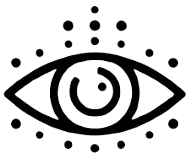

Manual Blink Vision - Significado dos Sinais Sonoros
Clique em um botão para ouvir uma frequência e a instrução correspondente.
440 Hz - Obstáculo identificado no canto inferior direito
494 Hz - Obstáculo identificado no lado direito central
554 Hz - Obstáculo identificado no canto superior direito
622 Hz - Obstáculo identificado no centro inferior
698 Hz - Obstáculo identificado no centro
784 Hz - Obstáculo identificado no centro superior
880 Hz - Obstáculo identificado no canto inferior esquerdo
988 Hz - Obstáculo identificado no lado esquerdo central
880 Hz - Obstáculo identificado no canto superior esquerdo
392-440-468-589 Hz - Conectando à Internet
600 Hz - Conectou-se à Internet
370 Hz - Desconectou da Internet
349 Hz - Dispositivo ligou
1109 Hz - Dispositivo desligado
622 Hz - Dispositivo acabando a bateria